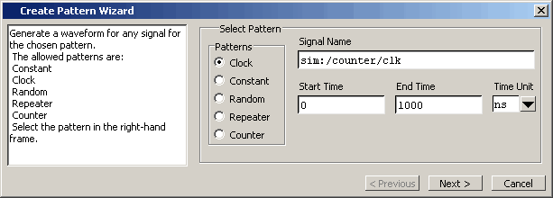
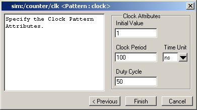
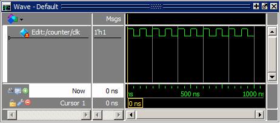
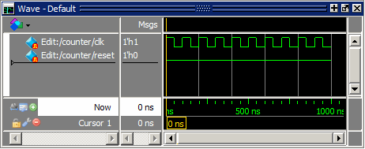

Waveform
Editor includes a Create Pattern Wizard that walks you through the
process of creating editable waveforms.
Procedure
- Use
the Create Pattern Wizard to create a clock pattern.
- In
the Objects window, right click the clk signal
and select .
This
opens the Create Pattern Wizard dialog box where you specify the
type of pattern (Clock, Repeater, and so on) and a start and end
time.
- The
default pattern is Clock, which is what we need, so click Next (Figure 1).
Figure 1. Create Pattern Wizard
- In
the second dialog box of the wizard, enter “1” for Initial Value.
Leave everything else as is and click Finish (Figure 2).
Figure 2. Specifying Clock Pattern
Attributes
A
generated waveform appears in the Wave window (Figure 3). Notice the small red dot on the waveform
icon and the prefix “Edit:”. These items denote an editable wave.
(You may want to undock the Wave window.)
Figure 3. The clk Waveform
- Create
a second wave using the wizard.
- Right-click
signal reset in the Objects window and select from
the popup menu.
- Select Constant for
the pattern type and click Next.
- Enter “0” for the Value and click Finish.
A
second generated waveform appears in the Wave window (Figure 4).
Figure 4. The reset Waveform